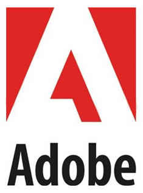

AppJam 2015
Software Development
Anthony Rumsey (
@planetrumsey)
Adobe

Who am I?

Computer Scientist
Software Developer
Programmer
A brief history...
- 1997 - Pascal
- 1999 - Visual Basic
- 2000 - HTML/JavaScript (web)
- 2002 - Java
- 2006 - Flex/ActionScript
- 2010 - HTML5/JavaScript/CSS3 (mobile)
Products
Process
Tools